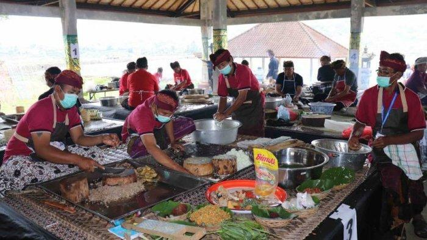

TRADISI NGELAWAR
Tradisi ngelawar adalah tradisi membuat dan memakan lawar, makanan khas Bali, saat perayaan Galungan. Tradisi ini dilakukan bersama-sama, baik saat membuat maupun memakannya. Lawar adalah makanan khas Bali yang biasanya berupa campuran sayuran dan daging cincang berbagai jenis yang direbus lalu dicampur dengan bumbu gede atau bumbu lengkap. Untuk persembahan, peletakan lawar tak bisa sembarangan. Lawar harus diletakkan sesuai arah mata angin. Lawar putih diletakkan di arah timur untuk Dewa Iswara. Lawar merah diletakkan di arah selatan untuk Dewa Brahma. Terakhir, Lawar kuning diletakkan di arah berat untuk Dewa Mahadewa.
- Sayuran dan daging cincang berbagai jenis
- Kulit hewan yang direbus
- Bumbu gede atau bumbu lengkap
- Aneka sate, balung, dan daging lainnya
